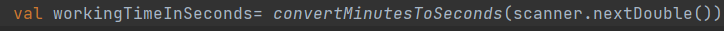
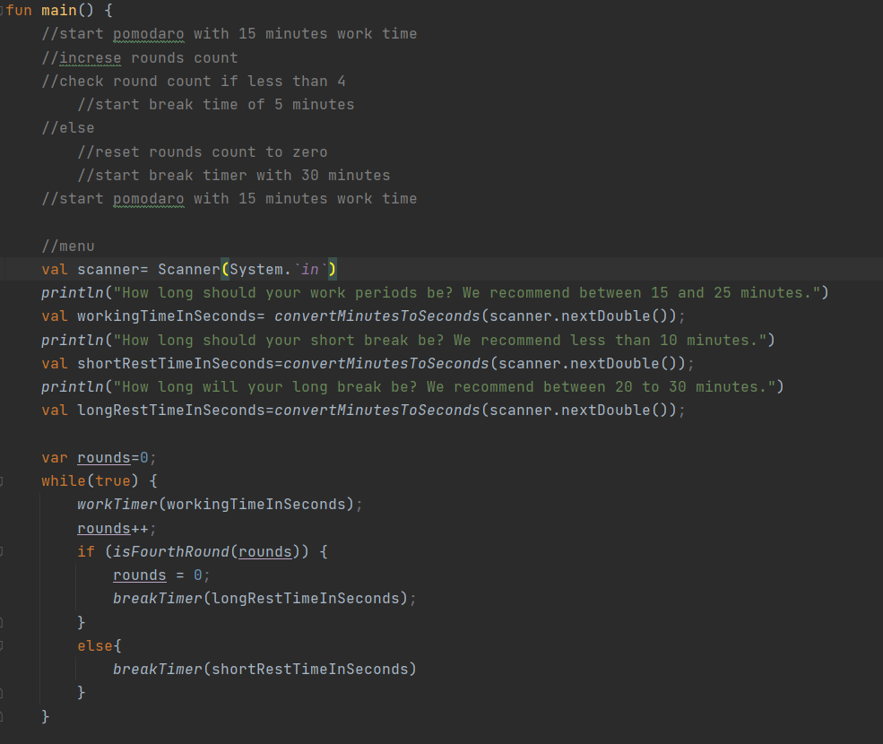
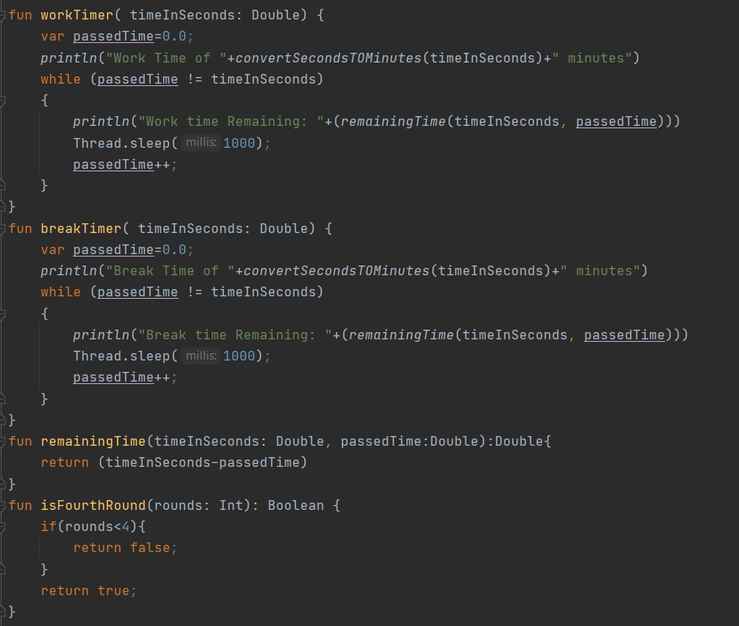
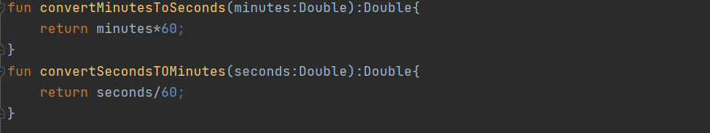
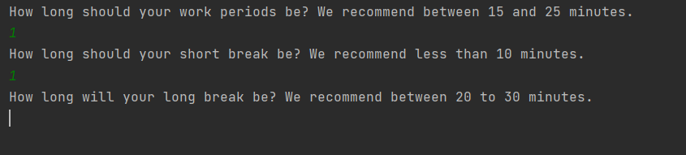

Email: Kaydon.Stubbs@gmail.com
LinkedIn: Kaydon Stubbs
What Is Kotlin
Recently I Needed to learn the language Kotlin. I had never used it or understood what the benifits for it were. So over the weekend I started to introduce myself to it.
Kotlin is a language similar to Java. It runs on the JVM. It was made to fix some of the problems found with Java.
The Differences
Kotlin uses val and var.  Val is imutible. Its similar to making something const in other languages. Var is mutable. Its like most other variables. Kotlin will infer the datatype so you dont have to explisity state the data type. Somthing I found to be interesting about Kotlin is that it wont automaticaly convert datatypes. You alwasy have to declare how it is to be changed.
The Tomato Project
I decided to write a pomodoro app using kotlin. The initial set up is very simple. I used IntelliJ IDEA. This is who created kotlin.
I then created a main function that is the entry point of the app.
I then created the Work timer function this is what keeps track of passed time and time remaining in the round. I then created the break Timer function. It is nearly the same as the Work Timer. If I had more time I would refactor both into a single function that does different things based on the state of the app.
I then wrote some helper functions to check what round we are in, convert the time given and returned to the user and made a simple menu for the user to interact with.
What I would do different
This project was to help introduce me to the Kotlin Language. If I was to redo this project I would use oop. I would break things down further into smaller parts. I would also like to work on a gui for the app. I think it would be nice tohave it make sounds to alert the user of what state it is going into.